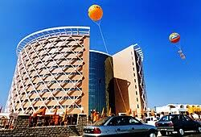
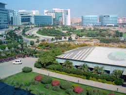

Modern Hyderabad


Hyderabad today is both historical and modern it hosts major IT parks, malls, a metro system, and rapidly growing residential and commercial zones.
The table below highlights a few keys areas and what makes them important for modern Hyderabd. This helps a visitor or researcher quickly compare areas by function.
| Area | Feature | Description |
|---|---|---|
| Hitech City | Tech Hub | Major IT companies and tech parks. Hub for software, startups and multinational offices. |
| Gachibowli | Education & IT | Universities & corporate campuses; growing residential area serving IT employees. |
Below is a small chart like summary showing recent infrastructure features:
- Metro lines expanding connectivity across the city
- Multiple tech parks & co-working spaces in Hitech City and Gachibowli
- New malls, hospitals and international hotel chains